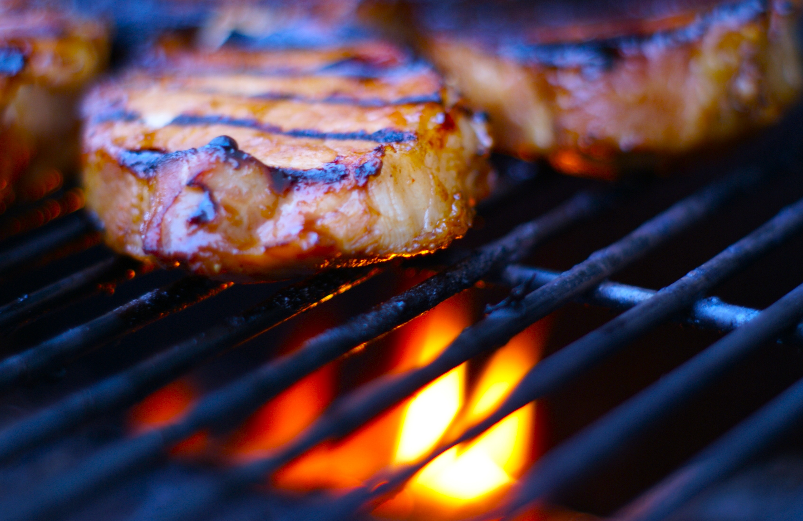
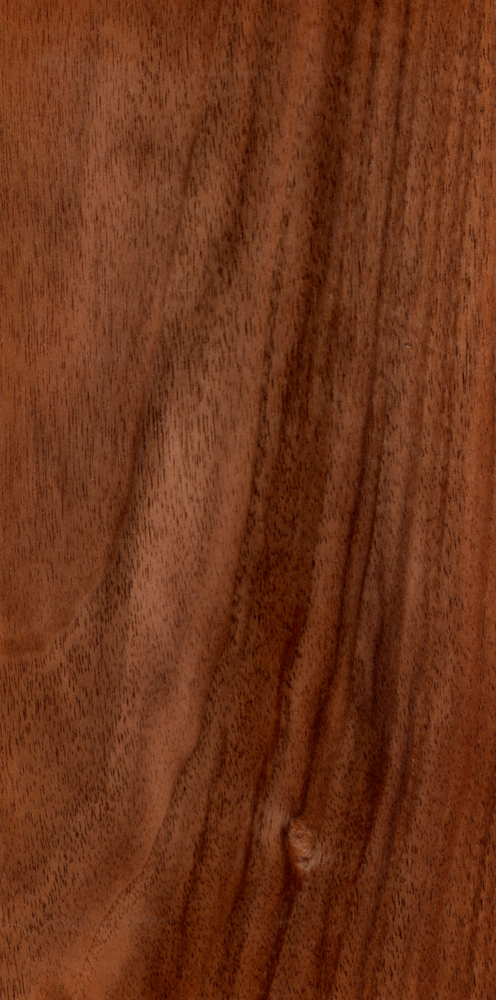

Where the heat of the anvil
meets the precision of the plate.
We craft heirloom high-carbon Damascus steel chef knives, exclusively available through our primal, open-fire dining experiences. Each blade is born in the brutal heat of the forge, shaped by hand over days, and tempered to achieve unparalleled structural integrity that will outlast the chef who wields it.
Primal Origin
Every blade is born in the brutal heat of the forge, shaped by hand to achieve unparalleled structural integrity. The marriage of 1095 and 15N20 high-carbon steels creates a material that is simultaneously hard enough to hold a razor edge and tough enough to absorb the shock of years of professional kitchen use.

The Art of Metallurgy
Our signature high-carbon steel is folded, hardened, and tempered over weeks. This creates a composite material with superior edge retention and fracture resistance, reflecting its journey from raw iron to culinary instrument.
Hand-Forged Excellence
No two blades share the same carbon fingerprint. The folding patterns honestly reflect the artisan's strike, giving each Forge & Feather blade a genuinely unique visual identity that cannot be replicated by machine.
Precision Edge
Optimised for Michelin-starred environments, our precise heat treatment protocol achieves a Rockwell hardness of 61-62 HRC. This microscopic, razor-sharp bevel retains its edge through marathon service shifts.
Smoke & Sizzle
Your knife is not just a tool; it is the centrepiece of a micro-seasonal degustation menu. We prepare heirloom ingredients over native hardwood embers — sustainably sourced oak, cherry, and applewood from the Cumbrian forests surrounding our foundry — carving each course with the very blade you have commissioned. The dining experience is deliberately intimate: a maximum of six guests per seating, gathered around the open hearth in our restored Victorian foundry, watching the flames lick the cast-iron grates as each course is prepared within arm's reach.

The Forging Process
From raw steel billet to finished heirloom instrument, every Forge & Feather blade passes through a meticulous four-stage production cycle spanning approximately three weeks.
Raw Steel Selection
The process begins with the careful selection of raw steel billets — alternating layers of 1095 high-carbon steel (providing hardness and edge retention) and 15N20 nickel steel (providing toughness and the distinctive bright contrast in the Damascus pattern). Each billet is hand-stacked to a minimum of 300 layers, forge-welded under intense heat, and drawn out to the approximate blade profile. The quality of this initial billet determines the structural integrity of the final blade, which is why we source exclusively from verified British and Swedish steel mills.
Forging & Shaping
The welded billet is heated to approximately 1,100°C in our coal forge and hand-hammered on a 150kg London-pattern anvil to establish the blade's profile, distal taper, and tang geometry. This is the most physically demanding and skill-intensive stage — each hammer blow must be precisely placed to achieve the correct steel displacement without introducing stress fractures or cold shuts. The blade is repeatedly returned to the forge between striking sequences, typically requiring 8-12 heating cycles to achieve the desired form.
Heat Treatment & Tempering
The shaped blade undergoes a critical heat treatment cycle that determines its final mechanical properties. It is heated to its austenitising temperature (approximately 815°C for our steel combination), quenched rapidly in warm canola oil to achieve maximum hardness, and then subjected to a triple tempering cycle at precisely controlled temperatures to relieve internal stresses and achieve the target Rockwell hardness of 61-62 HRC. This multi-stage tempering process balances extreme edge hardness with sufficient toughness to prevent chipping during professional kitchen use.
Finishing & Handle Fitting
The tempered blade is hand-ground on Japanese water stones through a progressive grit sequence (from 220 to 8,000 grit) to establish the primary bevel geometry and final edge. The Damascus pattern is revealed through a controlled acid etch using ferric chloride solution. The handle — carved from stabilised British walnut burl, Scottish bog oak, or client-specified exotic hardwoods — is precision-fitted with a full-tang construction, secured with stainless steel pins, and finished with multiple coats of food-safe tung oil. The balance point is verified at 10mm ahead of the bolster before final inspection and packaging.
The Culinary Arsenal
Why Forge & Feather?

Technical Specifications
A rigorous commitment to transparency. Our blades are engineered for perfect balance and enduring sharpness, with every material and measurement documented for the discerning professional.
Bespoke Commissions
Due to the intensive artisanal constraints of our craft, we accept only four commissions per calendar month. This ensures each blade and subsequent dining experience receives uncompromising attention. The commissioning process begins with a detailed consultation to capture your culinary style, grip preferences, and aesthetic vision, followed by the three-week forging cycle, and culminates in your private dining experience at the foundry where you take receipt of the finished blade.
Culinary Endorsements